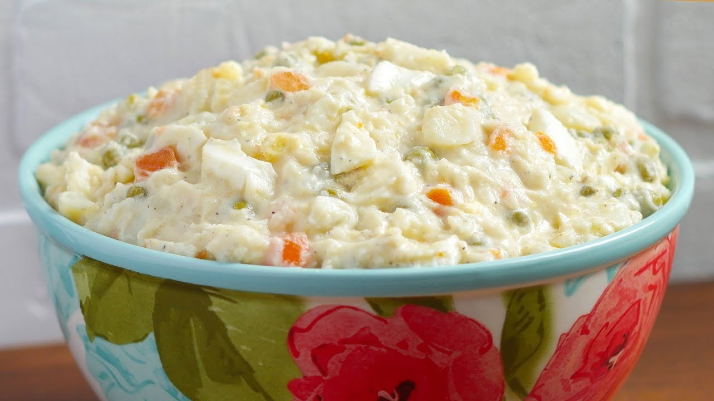

Belizean Potato Salad

Description
DESCRIPTION GOES HERE
Ingredients
- 1 cup potato peeled, boiled, and diced
- 2 hard-boiled eggs
- 0.5 cup shredded cabbage
- .25 cup carrots cooked and diced
- 0.5 cup Heinz salad dressing
- 1 14 oz. can green peas
- 0.25 cup chopped apples
- 0.5cup Grace mayonnaise
Method:
- Place all ingredients in a large bowl, leaving aside one egg for topping.
- Combine mayonnaise and salad dressing and stir until mixed properly to taste.
- Add mixture to ingredients in bowl and stir well with large spoon.
- Top with extra mashed egg and enjoy.
Back To Recipes